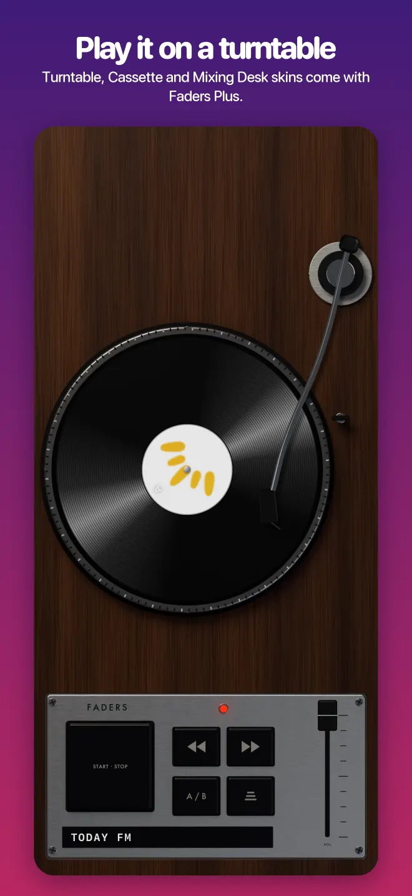
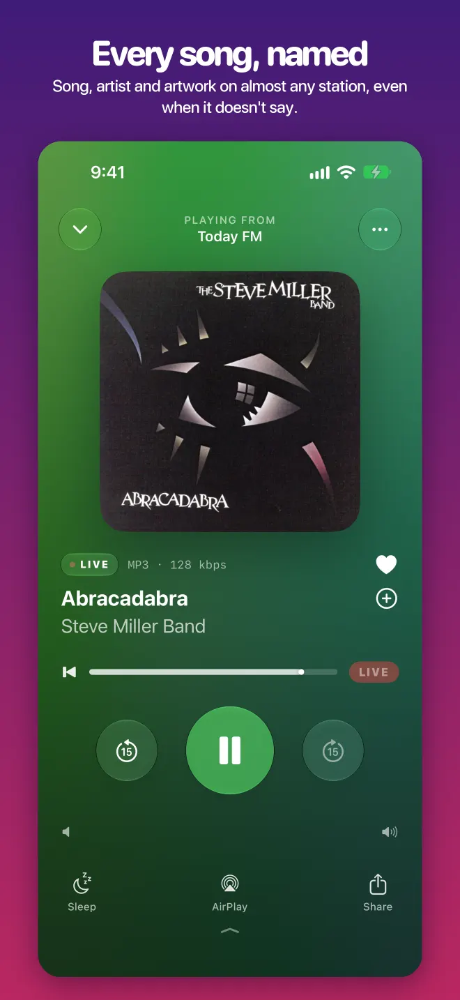
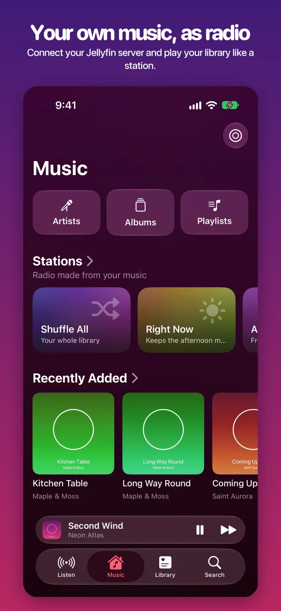
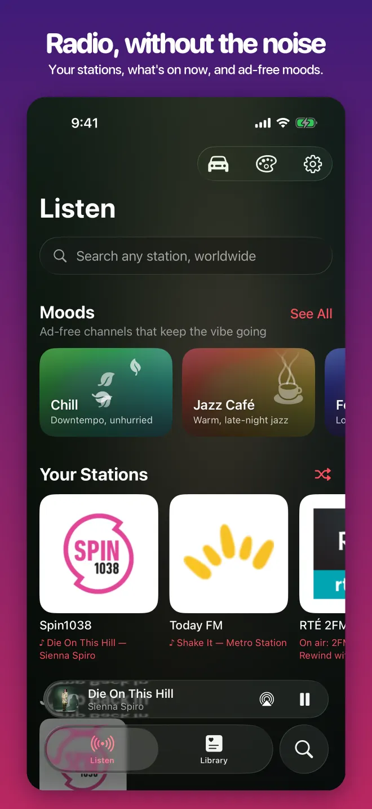
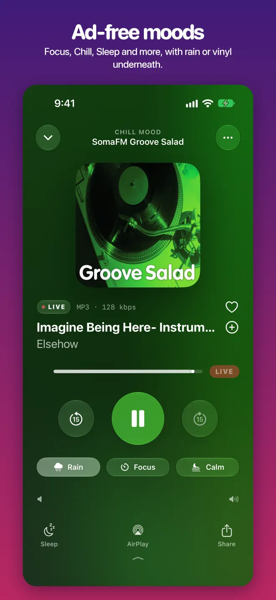
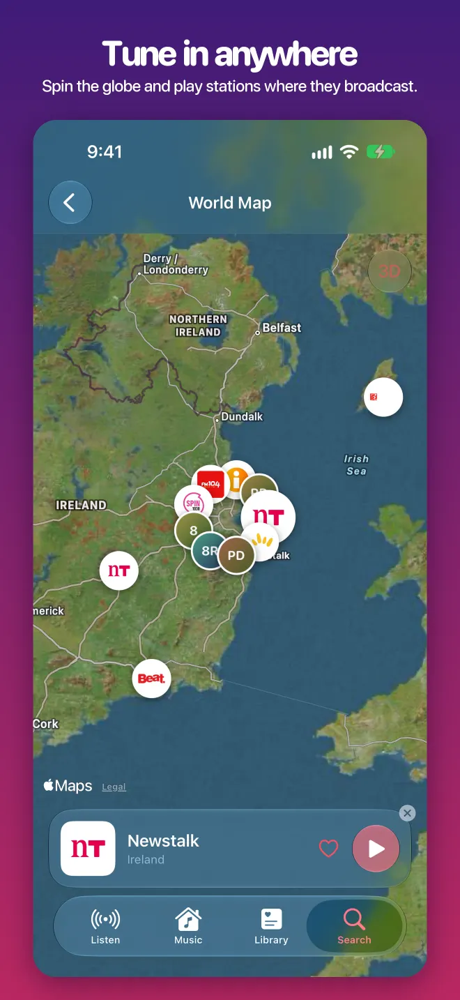
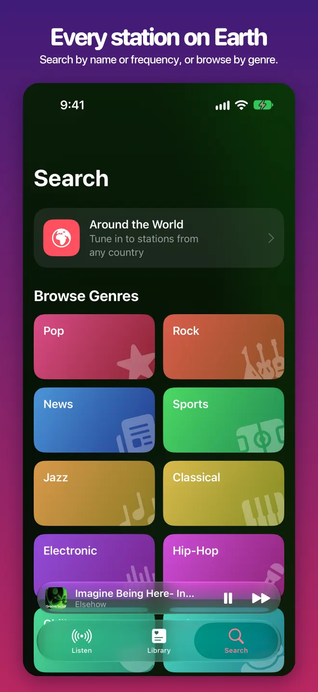
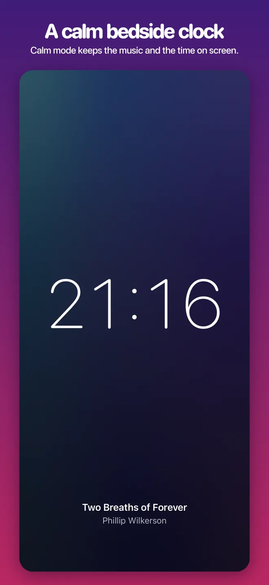
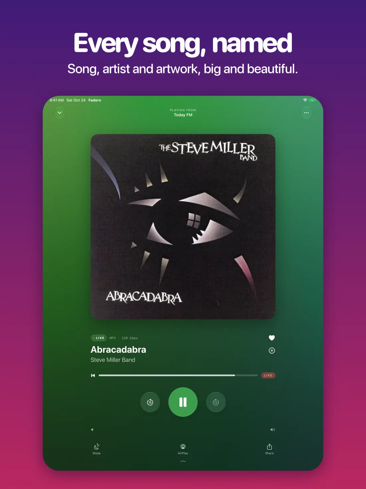
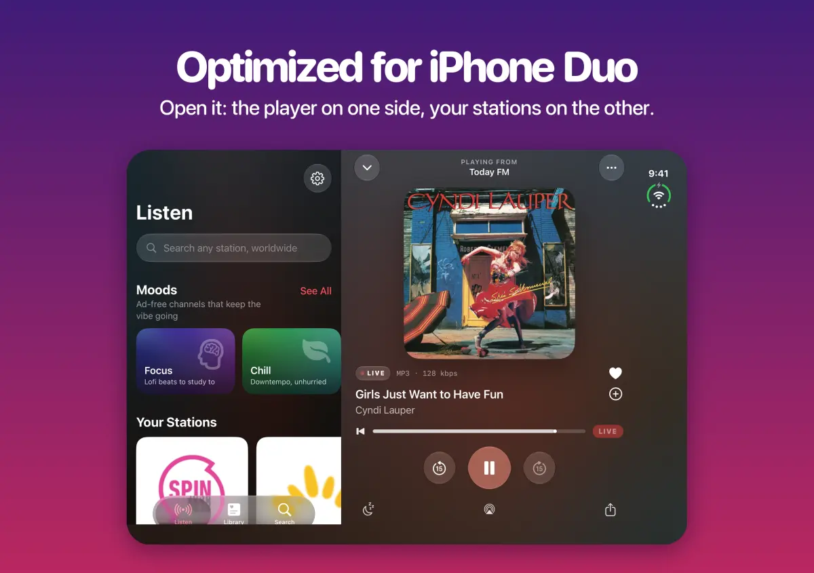

Play it on a turntable
Turntable, Cassette and Mixing Desk skins turn the player into a real piece of kit. Plus
Free on the App Store · iPhone, iPad, CarPlay, Apple Watch
Tens of thousands of live stations, every song named, ad-free moods, and a radio that changes the channel when your station goes to a break.
Listening is free. No account, no tracking.
Pick a mood
Tap play to tune in
Straight from listener-supported stations
This is a taste. In the app it keeps playing with your phone locked, in CarPlay and on your Watch, names every song on every station, and goes round the world.
Only in Faders
When your station goes to a break, Faders tunes to another of your stations that’s playing a song, and brings you back when the music returns. Just like you would with a dial. The station’s stream is never touched.
You’re listening to your station.
Choose Stay, Change Station or Music Only, for each station. Works with the phone locked. Free for everyone.

Every song, named
Faders reads what the station sends, and when it doesn’t say, it listens and names the song itself. Title, artist, album, year and cover, as each song starts. Your favourites even show what’s on before you tune in.
Playing right now on Faders Moods
Every station on Earth
Your local stations, your home country’s, or somewhere you’ve never been. Spin the globe on the World Map, search by name or frequency, or browse by genre.
Tap a station to listen in Faders. Station names and logos belong to their owners.
Made for every screen

Turntable, Cassette and Mixing Desk skins turn the player into a real piece of kit. Plus
Favourites, recents and genres on your dashboard, and Car Mode for cars without it.
Your stations and what’s on, on your wrist.
Pause, go back up to 30 minutes, or restart the song you just caught the end of. Plus
Alarms that ring through silent mode and start your station. Plus

Connect Apple Music, Plex or Jellyfin and your library plays like a station: by genre, decade or time of day.
Evens out stations, so a loud one never blasts after a quiet one.
Scrobble the songs you hear on the radio. Plus
“Play Focus on Faders.” Widgets, Control Center and the Lock Screen too.
Fades out gently, and Calm mode turns your phone into a bedside clock.
Made for iPhone Duo and iPad
Closed, the player fits one hand. Open it like a book and your stations sit beside the player. Stand it up and the cover sits on top with the controls on the base. On iPad, the player sits beside everything else.
A look inside







Pricing
No subscription. Pay once, keep it forever, share it with your family.
Free
€4.99 once
Launch price, going up to €9.99 on 1 December.
Private by design
No account, no tracking, no analytics, in the app or on this website. Song recognition and break checks happen on your phone, and your stations sync through your own iCloud.
Free on the App Store for iPhone, iPad, Apple Watch and CarPlay.
Download FadersOn a computer? Search “Faders radio” in the App Store on your iPhone.
The web player is a taste. The app is the real thing.
On your iPhone, search “Faders radio” in the App Store.